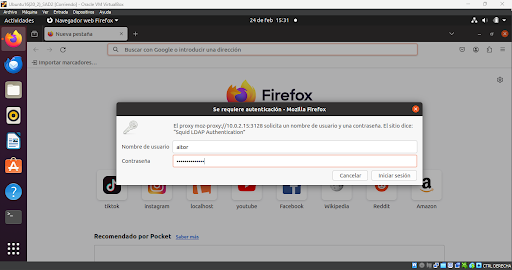

Instalación
Descargamos squid y confirmamos que está funcionando
Configuración
Nos dirigimos a la ruta /etc/squid/ y lo primero va a ser hacer una copia del archivo squid.conf.
Esto hará que tengamos una copia por si hay algún error en las configuraciones que hagamos
durante la práctica
Comprobamos el puerto de escucha de squid
Habilitamos el puerto en cuestión
Y como lo que queremos en esta práctica es denegar sitios concretos, comentamos la línea
de denegar y la cambiamos por aceptar

Apartado 1
Crear una ACL llamada "redes_sociales" que incluye los dominios de las redes sociales que queremos restringir. Denegar tiktok e instagram. Incluir pantallazo de la configuración y de la prueba (2 puntos).
Archivo de configuración para el ejercicio:
Comprobamos que los sitios determinados son inaccesibles

Apartado 2
Crear una ACL llamada "horas_laborables" que establece el rango horario de 9:00 a.m. a 5:00 p.m. de lunes a viernes. Incluir pantallazo de la configuración y de la prueba. (2 puntos)
Archivo de configuración para el ejercicio:
Comprobamos que no nos deja acceder
Cambiamos hora tanto del cliente como del servidor y comprobamos que nos deja
Apartado 3
Configuración de la autenticación de squid con NCSA. Crear un usuario con tu nombre y configurar el navegador para la autenticación. https://wiki.squid-cache.org/ConfigExamples/Authenticate/Ncsa. Incluir pantallazo de la configuración y de la prueba. (2 puntos)
Creo un usuario para añadirlo posteriormente al fichero y poder acceder
Líneas a añadir en el archivo de configuración para el ejercicio:
Comprobamos que el usuario y contraseña funciona y podemos navegar

Apartado 4
Configuración de la autenticación de squid con LDAP. Crear un usuario con tu nombre y configurar el navegador para la autenticación.https://wiki.squid-cache.org/ConfigExamples/Authenticate/Ldap. Incluir pantallazo de la configuración y de la prueba. (2 puntos)
Archivo configuración para el ejercicio:
Uso el usuario con el que hago todas las prácticas y comprobamos que nos deja navegar

Apartado 5
Una vez subido el pdf a la entrega, será necesario convertir el pdf en html y crear una página web en github. De esa forma tendremos una página en git para nuestro CV que incluya un manual de uso de SQUID. Será necesario incluir la URL de nuestro GIT. (2 puntos)
aitorramos.github.io/practica_sad/